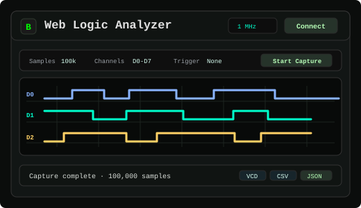
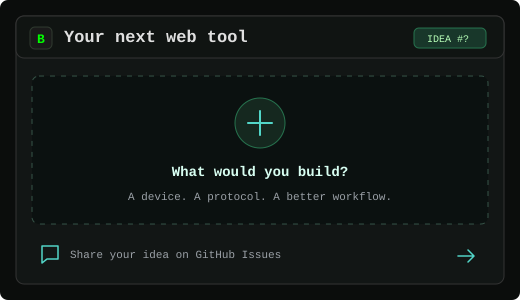

Supported Browsers
Web Serial works in Chrome, Firefox, Edge, Opera and compatible Chromium browsers on desktop. Safari does not currently support Web Serial hardware access.

Web Serial
Read logs, send commands and save serial sessions. Connect an ESP32, Arduino, Bus Pirate or any compatible USB-UART or CDC-ACM device.

SPI Flash
Identify, read and write SPI NOR flash chips with flashrom and a serprog-compatible adapter. Save firmware dumps straight to your computer.

SUMP Logic
Capture digital signals with SUMP-compatible hardware and inspect the waveforms. Export your captures as VCD, CSV, raw binary or session JSON.

ESP32-S3 SDR · 2.4 GHz
Wideband SDR covering roughly 2.2–2.8 GHz, with spectrum and waterfall views, peak and occupancy tracking, signal cleaning, and live signal inspection with the built-in ESP32-S3 radio.

ESP Tool
Flash firmware, back up memory or erase an ESP chip. Merge binaries offline and work with standard ESP32 layouts or custom offsets.

STM32 ST-LINK
Flash BIN or Intel HEX firmware, back up memory and erase STM32 targets. Connect through the ROM UART bootloader or an ST-Link adapter.

AVR ISP
Detect ATmega and ATtiny chips, read memory and write HEX files with AVRDUDE. An experimental tool for the ESP32 Bit Pirate AVRDUDE adapter.

Bit Bang · BPIO2
Control GPIOs, scan I2C devices and exchange SPI data with BPIO2-compatible hardware. Build visual sequences to repeat common operations.

Python · Pyodide
Run Python with Pyodide and control Bit Pirate over Web Serial. Start from the ESP32-Bit-Pirate-Scripts examples or write your own CLI and BPIO2 scripts.

Ideas & requests
Have a tool in mind? Open a GitHub issue with your device or protocol, what you need to do and any useful references.

Analysis follow-up
Use these browser tools after captures, serial logs or firmware reads to inspect bytes, extract ranges, parse structures and study small executable payloads.
These browser tools are built for ESP32 Bit Pirate workflows, but they also work with other hardware that exposes the same open interfaces and protocol adapters.
Web Serial works in Chrome, Firefox, Edge, Opera and compatible Chromium browsers on desktop. Safari does not currently support Web Serial hardware access.
The operating system must recognize your ESP32 board, USB UART adapter, CDC-ACM device or ESP32 Bit Pirate USB mode before the browser can request access.
If serial access fails on Linux, grant your user access to the device with sudo setfacl -m u:$USER:rw /dev/ttyACM0, then reconnect the board.
Serial logs, flash data and logic analyzer captures are processed locally by these static pages. The application does not upload captures to a server.
ESP32 Bit Pirate is an open-source firmware that turns compatible ESP32-S3 devices into a multi-protocol hardware hacking and debugging tool inspired by the Bus Pirate.
It supports serial and web command-line workflows for UART, I2C, SPI, 1-Wire, 2-Wire, 3-Wire, CAN, JTAG/SWD, infrared, Wi-Fi, Bluetooth, Sub-GHz, RFID, RF24, FM and USB adapter modes.
These web tools strengthen the ESP32 Bit Pirate ecosystem by making common embedded workflows discoverable from a secure browser page: serial console access, firmware memory work, digital logic capture and protocol investigation.
The same hardware can switch between protocol mode and adapter-style workflows, so you can move from probing a bus to capturing waveforms, reading memory or programming without changing tools.

Use the same command structure over USB serial, Wi-Fi web interface or browser-based Web Serial workflows.
Scan, sniff, send, script, dump, explore wired and wireless protocols.
Work with EEPROM, flash, smartcard, SIM, iButton, RFID tag, firmware dumps.
Useful companion projects for extending hardware and automating ESP32 Bit Pirate workflows.
These tools build on open browser APIs and open-source projects that make this possible.